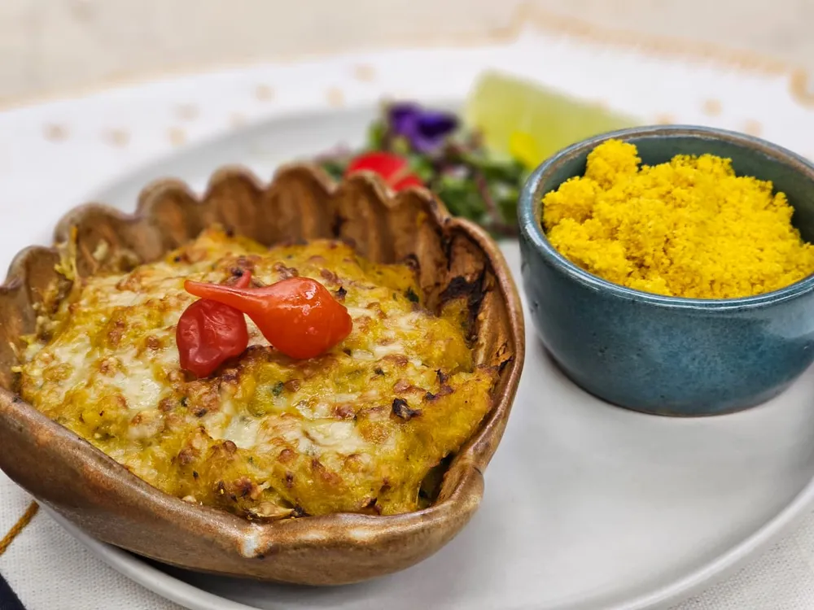

Jantar comigo

Casquinha de Siri
Ingredientes:
2 quilos de carne de siri limpa
3 tomates italianos sem pele e sem semente
2 cebolas picadas
1 maço de salsinha
2 vidros de leite de coco
3 dentes de alho picado
1 garrafa de azeite de dendê
5 pães amanhecidos sem casca
1 xícara de chá de farinha de trigo
1 litro de leite integral
Sal e pimenta-do-reino branca a gosto
Queijo parmesão ralado a gosto
1 fio de azeite para refogar
Modo de Preparo
Limpe 2 quilos de carne de siri e reserve.
Bata com um garfo 5 pães amanhecidos sem a casca junto com 1 xícara de chá de farinha de trigo e 1 litro de leite integral. Reserve.
Depois, em uma panela grande, refogue no azeite 3 dentes de alho picado, 3 tomates italianos sem pele e sem semente, e 2 cebolas picadas.
Em seguida, acrescente a carne de siri o sal, pimenta-do-reino branca a gosto e 1 maço de salsinha. Por último, adicione 1 garrafa de azeite de dendê.
Coloque a mistura nas casquinhas e leve para gratinar com queijo parmesão ralado a gosto por alguns minutos.